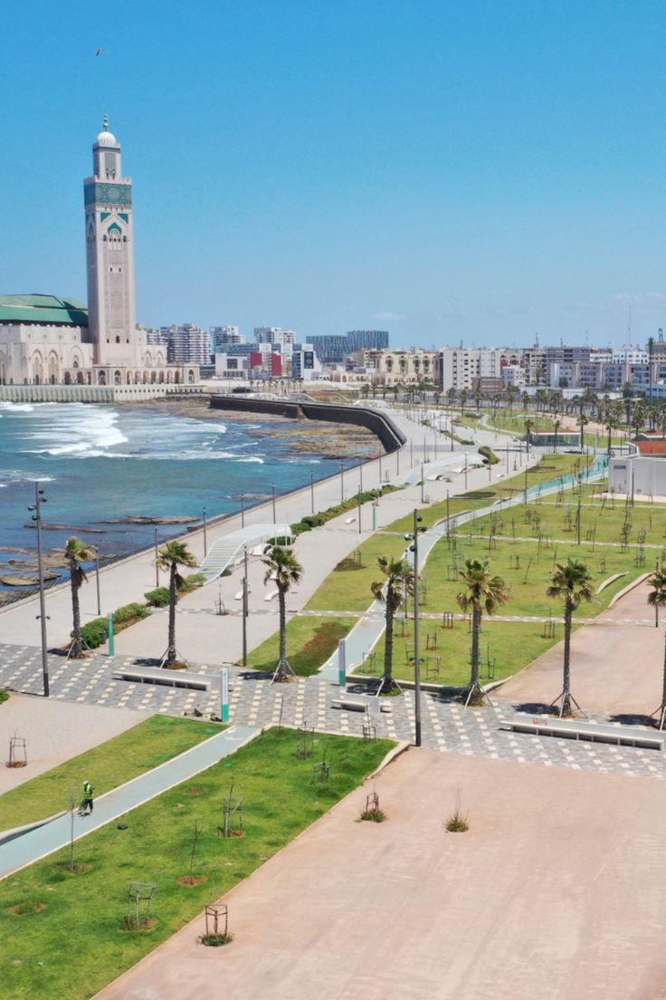

<!DOCTYPE html>
<html lang="en">
<head>
  <meta charset="UTF-8" />
  <meta name="viewport" content="width=device-width, initial-scale=1" />
  <title>Moroccan Vibes - Discover Morocco’s Culture and Beauty</title>
  <meta name="description" content="Explore Morocco’s rich culture, beautiful landscapes, traditional cuisine, and travel destinations with Moroccan Vibes." />
  <link rel="stylesheet" href="styles.css" />
  <link rel="stylesheet" href="https://cdnjs.cloudflare.com/ajax/libs/font-awesome/6.0.0-beta3/css/all.min.css" />
</head>
<body>
  <!-- باقي الصفحة -->
</body>
</html>

<html lang="en">
<head>
    <meta charset="UTF-8">
    <meta name="viewport" content="width=device-width, initial-scale=1.0">
    <title>Casablanca - Moroccan Personal Website</title>
    <link rel="stylesheet" href="styles.css">
    <link rel="stylesheet" href="https://cdnjs.cloudflare.com/ajax/libs/font-awesome/6.0.0-beta3/css/all.min.css">
</head>
<body>
    <!-- Header Section -->
    <header>
        <div class="header-container">
            <a href="index.html" class="logo">
            
                <div>Morocco<span>Vibes</span></div>
            </a>
            
            <button class="mobile-menu-btn" id="mobileMenuBtn">
                <i class="fas fa-bars"></i>
            </button>
            
            <nav>
                <ul id="navMenu">
                    <li><a href="index.html">Home</a></li>
                    <li><a href="about.html">About Me</a></li>
                    <li><a href="casablanca.html" class="active">Casablanca</a></li>
                    <li><a href="morocco.html">Morocco</a></li>
                    <li><a href="sport.html">Sport</a></li>
                    <li><a href="cuisine.html">Cuisine</a></li>
                    <li><a href="travel.html">Where to Travel</a></li>
                    <li><a href="invitation.html">Invitation</a></li>
                </ul>
            </nav>
        </div>
    </header>

    <!-- Hero Section -->
    <section class="hero" style="background-image: linear-gradient(rgba(0,0,0,0.4), rgba(0,0,0,0.4)), url('https://i.pinimg.com/736x/fe/66/8a/fe668af0da80c9e75e59f88411170ec3.jpg');">
        <div class="hero-content">
            <h1>Discover Casablanca</h1>
            <p>Morocco’s dynamic metropolis, where rich heritage blends seamlessly with modern innovation.</p>
        </div>
    </section>

    
    <section class="section">
        <div class="container">
            <div class="section-title">
                <span class="section-subtitle">The White City</span>
                <h2>About Casablanca</h2>
            </div>
            
            <div class="about-grid">
                <div>
                  
                    <p>Casablanca, Morocco’s largest city and economic capital, is a vibrant Atlantic coastal metropolis. Known locally as "Dar El Beida," it seamlessly blends a rich historical heritage with striking modern architecture and stunning seaside vistas.</p>
                    
                    <p>With a population of approximately 4 million, Casablanca serves as Morocco’s primary business hub, featuring the country’s largest port and a diverse industrial sector. While the city showcases a modern skyline and vibrant economic activity, it proudly preserves its cultural heritage, where historic landmarks and traditional souks coexist harmoniously with contemporary urban development.</p>
                    
                </div>
                <div>
                    <!-- Replace with an image of Casablanca -->
                    
                </div>
            </div>
        </div>
    </section>

    <section class="section" style="background-color: white;">
        <div class="container">
            <div class="section-title">
                <span class="section-subtitle">Landmarks</span>
                <h2>Must-Visit Places in Casablanca</h2>
            </div>
            
            <div class="place-grid">
                <div class="place-card">
                    
                    <div class="place-card-content">
                        <h3>Hassan II Mosque</h3>
                        <p>The Hassan II Mosque, one of the largest in the world, stands majestically on the edge of the Atlantic Ocean in Casablanca. Its breathtaking location and intricate architectural details make it a symbol of Moroccan craftsmanship and faith. The mosque's minaret rises 210 meters into the sky, making it the tallest religious structure in the world. With space to accommodate over 100,000 worshippers, it is not only a place of spiritual significance but also a landmark of national pride.</p>
                    </div>
                </div>

                <div class="place-card">
                    
                    <div class="place-card-content">
                        <h3>The Corniche</h3>
                        <p>Casablanca’s scenic beachfront promenade, La Corniche, is lined with vibrant restaurants, cafés, and beach clubs, offering stunning views of the Atlantic Ocean. It’s the perfect destination for relaxation, seaside strolls, and experiencing the city’s modern coastal lifestyle</p>
                
                    </div>
                </div>
                
                <div class="place-card">
                    
                    <div class="place-card-content">
                        <h3>Old Medina</h3>
                        <p>The Old Medina of Casablanca is the city’s historic core, characterized by traditional Moroccan architecture, winding narrow streets, and a vibrant atmosphere. Here, visitors can explore authentic souks filled with handcrafted goods, spices, textiles, and experience the charm of everyday local life.</p>
                        
                    </div>
                </div>
                
            </div>
        </div>
    </section>

    <!-- Modern Casablanca Section -->
    <section class="section">
        <div class="container">
            <div class="section-title">
                <span class="section-subtitle">Contemporary City</span>
                <h2>Modern Casablanca</h2>
            </div>
            
            <div class="about-grid">
                <div>
                    
                </div>
                <div>
                    
                    <h3>Business & Lifestyle Hub</h3>
                    <p>Modern-day Casablanca is a thriving economic powerhouse, boasting advanced infrastructure, a growing number of international companies, and upscale urban developments. The city is home to Morocco Mall—one of the largest shopping centers in Africa—and Casablanca Finance City, a major financial hub positioning Morocco as a gateway to African markets</p>
                    
                    <p>Casablanca is renowned for its striking Art Deco architecture, a legacy of the French colonial era. This distinctive style is showcased in elegant buildings throughout the city center, particularly along the iconic Mohammed V Boulevard, blending European design with Moroccan craftsmanship</p>
                    
                </div>
            </div>
        </div>
    </section>

    <!-- My Connection Section -->
    <section class="section" style="background-color: white;">
        <div class="container">
            <div class="section-title">
                <span class="section-subtitle">Personal Connection</span>
                <h2>Casablanca Through My Eyes </h2>
            </div>
            
            <div>
                
                <p>Casablanca has been my home since birth. Growing up in this vibrant and ever-evolving city has deeply influenced my identity. It has given me a unique perspective—one that blends the richness of traditional Moroccan values with the energy and diversity of a modern, cosmopolitan lifestyle. From the bustling souks to the contemporary skyline, every corner of Casablanca has shaped my story. </p>
                
                <p>Some of my most cherished memories come from moments spent with family during Eid at the magnificent Hassan II Mosque, enjoying fresh seafood along the lively Corniche, and wandering through the narrow streets of the Old Medina. These experiences not only brought joy but also deepened my appreciation for Casablanca’s cultural richness and enduring traditions.</p>
                
                <p>Despite the challenges that come with being a rapidly growing metropolis, Casablanca remains close to my heart. It is a city of contrasts and opportunities, where Morocco’s deep-rooted traditions coexist beautifully with modern progress and global influence.</p>
                
            
            </div>
        </div>
    </section>


    <footer>
        <div class="container">
            <div class="footer-content">
                <div class="footer-section">
                    <h4>Navigation</h4>
                    <ul class="footer-links">
                        <li><a href="index.html">Home</a></li>
                        <li><a href="about.html">About Me</a></li>
                        <li><a href="casablanca.html">Casablanca</a></li>
                        <li><a href="morocco.html">Morocco</a></li>
                        <li><a href="sport.html">Sport</a></li>
                        <li><a href="cuisine.html">Cuisine</a></li>
                        <li><a href="travel.html">Where to Travel</a></li>
                        <li><a href="invitation.html">Invitation</a></li>
                    </ul>
                </div>
                
                <div class="footer-section">
                    <h4>Contact Information</h4>
                    <div class="contact-info">
                        <!-- Replace with your own information -->
                        <p><i class="fas fa-envelope"></i> walidboukar278@gmail.com</p>
                        <p><i class="fas fa-phone"></i> +86 176 5809 7604</p>
                        <p><i class="fas fa-map-marker-alt"></i> Casablanca, Morocco</p>
                    </div>
                </div>
                
                <div class="footer-section">
                    <h4>Connect With Me</h4>
                    <div class="social-links">
                       
                        <a href="https://facebook.com/ilyass.zizou"><i class="fab fa-facebook-f"></i></a>
                        <a href="https://x.com/BoukarWalid"><i class="fab fa-twitter"></i></a>
                        <a href="https://www.instagram.com/walidbkr2/"><i class="fab fa-instagram"></i></a>
                        <a href="https://www.linkedin.com/in/walid-boukar-02b275251/"><i class="fab fa-linkedin-in"></i></a>
                        <a href="https://u.wechat.com/MCf7ZEDU2F1vFEgxEU7VK-c?s=4"><i class="fab fa-weixin"></i></a>

                    </div>
                </div>
            </div>
            
            <div class="footer-bottom">
                <!-- Update with your name and current year -->
                <p>&copy; 2025 BOUKAR WALID. All Rights Reserved.</p>
            </div>
        </div>
    </footer>

    <script>
        // Mobile Menu Toggle
        const mobileMenuBtn = document.getElementById('mobileMenuBtn');
        const navMenu = document.getElementById('navMenu');
        
        mobileMenuBtn.addEventListener('click', () => {
            navMenu.classList.toggle('show');
        });
    </script>
</body>
</html>
